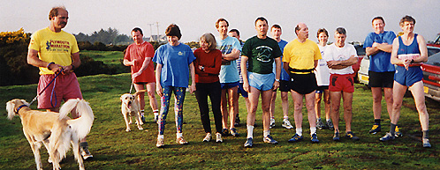

A PORTRAIT OF DRAKE

Drake 2000 from left to right: Wimpers, Bouncer, Yakkidah, Mudflaps, Squawk, Chippendale (partially hidden), Bart, Squelcher, Limpalong, Ivor, Mole, Olive, Rover. Run No. 857 Date 8 May 00 Bodmin Moor
Drake Hash House Harriers go on the run every Monday evening at 7.30pm. Braving the fogs, bogs and ghostly dogs of Dartmoor, England (the setting for the Sherlock Holmes story 'The Hound Of The Baskervilles'), we set off on the trail of sawdust....
Drake H3 is an off-road hash - we don't run on roads! But we don't need to, because we are very lucky to live near Dartmoor - a large area of wild moorland in the south west of England. Most of our trails are laid on the moor, but we often head for the coast and run along the coastal footpaths and around the estuaries. It's a hashers paradise! See for yourself by going to Drake's Country.
Our runs are designed to last for about an hour and cover a distance of between four and five miles. Go to On The Trail to see a typical Drake H3 run. You don't have to be super fit to run with us, being able to jog is enough as there are plenty of shortcuts. Because we run at 7.30pm all the year round, it means that in the winter we have to use torches. Head torches are very popular, and so the hash often resembles a miners' convention. It's great to run in the company of a group of eccentrics that can almost make you seem normal by comparison.
Although our membership has gradually changed over the years, the hash has stayed much the same size with between ten and thirty runners turning up on a regular basis. Drake H3 membership consists of men, women and dogs. The dogs are welcome as long as they keep their owners under control. The atmosphere is very friendly, laid back and easygoing. Unlike some hashes, we don't go in for down downs, but we do maintain the usual hash traditions of giving each of our members a hash name, writing about our exploits in a hash mag and, of course, going to a pub after the run.
Drake was 'born' on 23 January 1984 when the club had its first run. The runners who formed Drake H3 had previously hashed with Tamar Valley H3 which was started in 1982. Tamar Valley was (and still is) a great success often with around a hundred runners turning up. It has been said that Drake H3 was set up because of the length of time it took to get served at the bar after a Tamar Valley H3 run! However, our founder members, who are known as Drake's Parents, sometimes try to convince people that Drake H3 was created to concentrate on off-road hashing. The close ties between the two clubs were acknowledged by Drake H3 continuing to call itself 'Son Of Tamar Valley H3' for several years after it was formed.
Cream Soda was the person who we have to blame for starting the hash and for dreaming up the name of Drake for it. He named it after the famous British naval hero Sir Francis Drake who was born and lived in west Devon. In fact, the club was originally known as Drake's Hash House Harriers but was converted to Drake when someone left the 's' off when writing the hash mag.
Drake H3 is still going strong. Over the years we've had plenty of thrills and spills, pain and pleasure, laughter and tears, good times and ....... Come to think of it there's only good times on the hash. So why not try it yourself? If you're in our area and would like a run why not join us, you'll be most welcome. The Next Runs & News section gives details of our forthcoming runs or you could send us an e mail by clicking 'E Mail Drake' on the navigation bar. If you can't make it to a Drake run go to our Links page to find a hash near you.
| < on back |